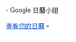
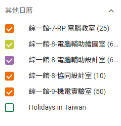
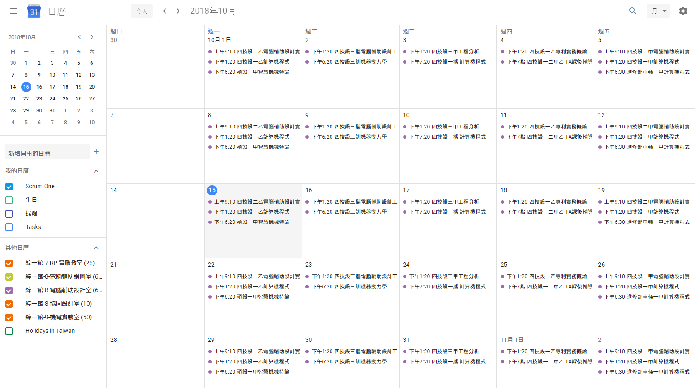
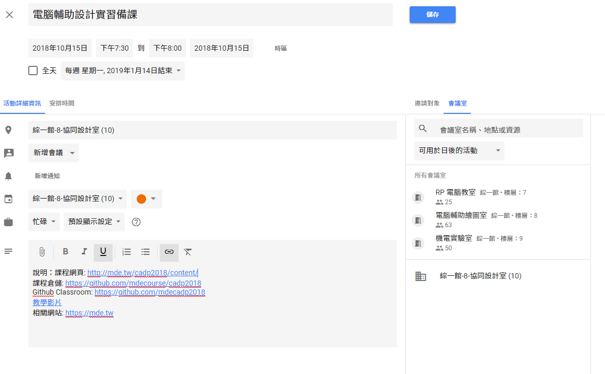

當 Google Calendar 的管理者收到通知信件時, 可以點選"查看您的日曆"連結, 如下圖所示:

點選後, 將可在 Google Calendar 中顯示具管理權限的日曆, 如下圖所示:

含可管理日曆全畫面, 則如下圖:

當管理者選擇具管理權限的特定行事曆, 於特定時段, 即可登錄預定使用事件, 註記時段的保留紀錄, 如下列畫面:

其中包含:
事件名稱 - 在上圖為"電腦輔助設計實習備課".
事件時段 - 在上圖設定為每週一重複循環至 2019.01.14 止, 表示至本學期期末考週後一週為止.
事件所對應行事曆 - 在上圖為橘色點的左方, 選擇"綜一館-8-協同設計室(10)", 其中的 10 表示此會議室至多容納 10 人.
事件所使用會議室 - 在上圖為右下方, 選擇使用"綜一館-8-協同設計室(10)", 當各管理者登錄預定事件時, Google Calendar 會自動檢查時段是否衝突.
事件內容 - 位於上圖左下方, 管理者可以輸入與該時段相關的資料連結.
上述事件儲存後, 將可顯示在協同設計室行事曆上.